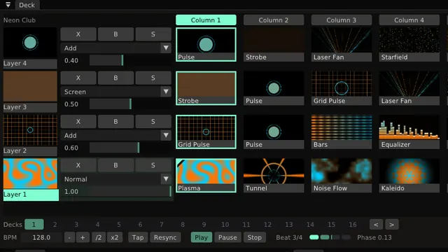
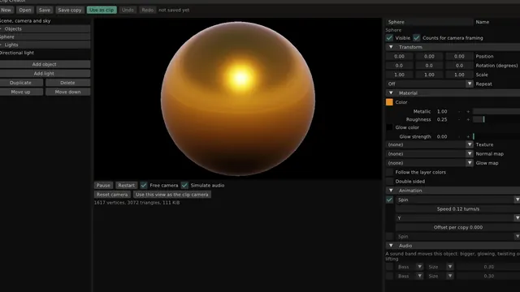
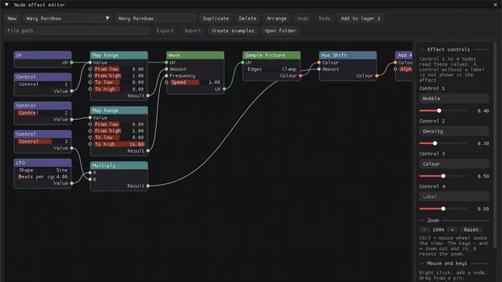
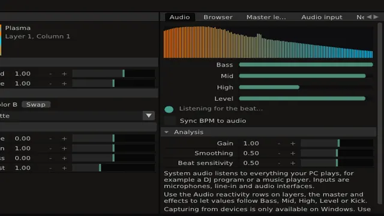
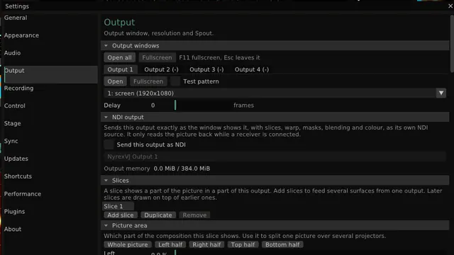
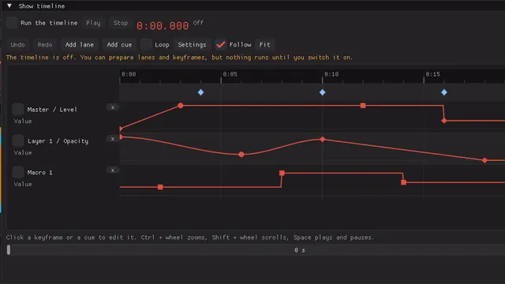

Clips and effects
More than 50 clips (fractals, raymarched 3D scenes, neon geometry, lasers, spectrum visuals) and more than 70 effects. Drop in your own shader files, also from Shadertoy.
Your own shaders →NyrexVJ is a free VJ program in the spirit of Resolume Arena. It plays generative clips, videos and 3D scenes on layers, stacks effects on top, follows your music and sends the picture to OBS or to a fullscreen output window. Native C++ and OpenGL, no game engine, one program file for Windows and one for Linux.
MIT licence, free of charge, no account, no ads. Development builds are published as the Nightly release, so expect rough edges.

Three steps from the first start to a picture on the big screen. The manual walks you through it in five minutes.
Click a cell in the clip grid or press the keys 1 to 8 to start a whole column. Every deck has four layers, and you can glide between 16 decks.
Click an effect in the Library, pick an audio source and let Bass, Mid, High and Kick move any slider. Tap the tempo with the space bar.
Hand the picture to OBS with Spout on Windows, send it over NDI, or open fullscreen output windows for projectors.
A short tour. Every card links to the chapter of the manual that explains it.

More than 50 clips (fractals, raymarched 3D scenes, neon geometry, lasers, spectrum visuals) and more than 70 effects. Drop in your own shader files, also from Shadertoy.
Your own shaders →
Play .glb and .gltf models like any clip, or build scenes from shapes, models and lights in the Clip Creator and save them as portable .nyxclip files.
The Clip Creator →
Build your own effects in a node editor. A graph of 68 nodes (picture, audio, beat, maths, colour, distortion, noise, shapes) becomes one shader, and effects are small files you can share.
The node effect editor →
Layers and effects follow system audio, a microphone or a line-in. Control the show from a MIDI controller, over OSC or from a web page on your phone.
Audio and music →
Up to four output windows with slices, polygon masks, colour correction, projection mapping, warping and edge blending. Spout, NDI and recording are built in.
Outputs, mapping and OBS →
Automate sliders and switches with keyframes, follow LTC or MTC timecode and fire cues. It is optional and off until you switch it on.
The show timeline →A VJ program that eats the whole graphics card is no use on a party computer. NyrexVJ is built to stay light, and it shows you where the time goes.


Press F1 in NyrexVJ and the manual opens in its own window, with a contents list, search and links between chapters. It explains how to install and start, where every window and setting is, how to play a show and what to do when something does not work.
The same text is on this website, in English and in German, so you can read it before you download anything.
NyrexVJ has grown since the manual came out. Most of these newer parts are off until you switch them on, and some are marked experimental. They were tested with computer-made pictures and a software renderer, not yet with real projectors, cameras or controllers. The test plan says what is still open.
Hold a launch until the next beat, bar, two or four bars (off by default). Mark favorites, add tags and swap one clip in every cell of every deck in one undoable step. Starting on the beat
Pack a show and every file it uses into one .nyxshow file for another computer. Opening one is a dry run first, and nothing changes until you press Import. Show packages
A .nyxpack file brings presets, shaders, node effects, masks and venue setups. Conflicts are listed first, and a plugin is only copied, switched off, after you tick that you trust the author. Community packages
Write text clips, play particle clips and save the four effects of a layer as a chain. An experimental mode runs up to 1,048,576 particles on the graphics card and falls back to the processor when it cannot. Text, particles and chains
Edit a shader with line numbers, colours and a live preview that never touches the output, with the compile messages next to it and four templates to start from. The shader editor
Play another layer, several layers or the master inside a layer, feed a layer back one frame late, and send a single layer over Spout, NDI or recording. Video routing
Follow one master with up to eight PCs (off by default, signed with a key, not encrypted, media is never sent). A second PC can stand by and take over by hand or, if you tick it, by itself. NyrexVJ does not switch cables or projectors for you. Network sync · Hot standby
Describe walls and pillars in metres, put a virtual projector in the room and calibrate with points by hand. Calibration with a camera is not built. 3D mapping onto surfaces
The colour model is written down. Optional: a .cube LUT, tone mapping for HDR videos and a colour profile per output. The picture inside stays 8 bit, and there is no HDR output. Colour
Experimental and off by default: makes in-between pictures for videos and adds motion blur from the movement between frames, within a graphics memory limit. Smoother motion
Four clips take an RTSP, SRT or UDP stream (off by default, only these three protocols). The NDI version of the installed runtime is shown. Network streams
Experimental and off by default: finds people in a camera, NDI or stream picture by comparing it with the empty scene, for a mask effect and six numbers that can drive anything. No AI model is included. Person detection
Save window arrangements, change 13 shortcuts, scale the interface from 0.7 to 2.5, and switch on high contrast and keyboard navigation. Screen readers do not work yet. Interface and accessibility
The Performance page keeps measured and estimated graphics memory apart, shows the slowest frames and raises eight warnings. An optional memory budget releases clips that are not playing. Graphics memory
An experimental plugin for Unreal Engine reads NyrexVJ's OSC output in Blueprints and C++, with connection status and round trip time. Its Unreal Engine part has never been compiled yet. Unreal Engine and NyrexVJ
Learn a knob with one click, remote control over OSC, a browser page for your phone and a REST API for scripts.
Follow the audio, LTC or MTC timecode, MIDI clock or Pro DJ Link, with a cue list that fires at the right time.
Record the final picture to H.264, HEVC, ProRes, HAP and more, up to 4K, with sound from your audio input.
Show the picture of Unreal Engine, TouchDesigner or a game through Spout, and NDI streams, webcams or capture cards.
Add modulation sources and image sources with a small C interface. Plugins are native code and off until you enable them.
Factory looks to start from, your own presets, and a session that is saved automatically and comes back after a crash.
English, German, Spanish, French, Italian, Portuguese, Dutch and Japanese, plus your own language as a small .json file.
Switch the whole interface between Studio, Orange, Blue, Red, Green, Purple, Pink, Cyan, Gold and Mono.
MIT licence. The code, the roadmap and the decisions behind it are on GitHub, and issues and pull requests are welcome.
Yes. It is open source under the MIT licence, with no account, no ads and no tracking.
On Windows as a single .exe file, and on Linux (x64) as a single file or an archive. Linux needs glibc 2.35 or newer, an X11 or XWayland session and a graphics driver with OpenGL 3.3. There are no builds for macOS.
Yes. Send the picture to OBS or record the output window, and use the VRChat parameters on the Stage page if you like.
Only to check for updates and, if you press the button, to download the FFmpeg libraries for video. Everything else works offline.
Yes, because the program is not code-signed. Choose More info, then Run anyway. Every build has a SHA-256 list, and the program checks it itself when it updates.
Start with the troubleshooting chapter of the manual. For bugs and ideas open an issue on GitHub.
One file, no installer, no account. Download it, press F1 and you are playing in five minutes.